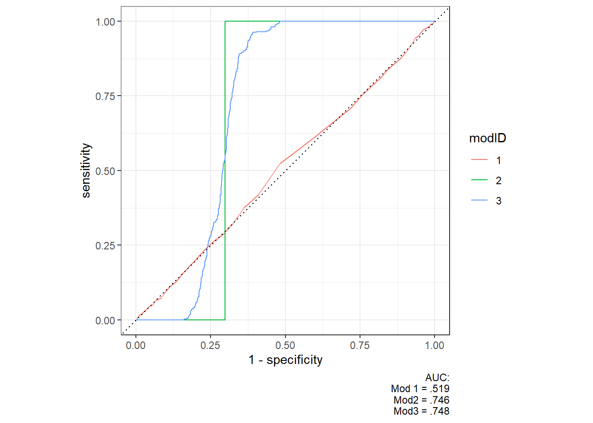

Model Selection
When discussing machine-learning so far we have for the most part evaluated models based on an intuitive idea of whether we like them or not. Unsurprisingly, this isn’t actually a very good way for choosing the best model. Often we want to attempt several different models, based on different assumptions regarding our data, and then choose which we will use based on some “objective” measure that shows us which model is best to achieve our goal. This form of model selection is what this chapter will go through. We will focus on the supervised ML-models and prediction errors, and different ways to test this. As usual we will use the election data, and the different dimensions within said dataset.
When attempting to do model selection, we must of course first have some goal we want the model to achieve. In this example we will attempt to predict an individuals party based on everything else we have in the dataset. A good model, therefore, is one which usually manages to predict the party correctly. The number we need to beat to say that the models is any good at all is that it is correct 1/9 times, or 11 % of the time. If it’s worse than that it is actually worse than random chance. This type of machine learning is what is usually called a classification problem.
Lets start by setting up the different models. The first important part of making the new models is to separate them into a training set and a testing set. The latter is an amount of data that we do not use to create the model. The reason for this is that the model will often be almost perfect at predicting the data it was trained on, as it will contain exactly those patterns which it is meant to find. Testing the model on these data is therefore usually useless, as it tells you nothing about whether the model is able to predict new data. The most usual way of doing this is to take a random sample with around 25 % of the data. Luckily, the tidymodel package already contains a function to do this for us.
valgdata_split <- initial_split(valgdata, prop = 3/4, strata = libVote)
# By using the training or testing functions we can see the new dataset
# The amount of people voting for the liberals are so few that a pure random sample
# could end up without any observations. To avoid that we use it as a sampling strate, making sure
# they are present in both sets.To have something to work with we will go back to two of the models from the chapter on supervised learning and one from the unsupervised; K-nearest neighbours, and logistical regressions. This gives us the ability to test out two different questions. With KNN we will attempt at finding which party an individual is voting for among all the different parties in our data. With the logistical regression we will instead simply try to predict whether someone is a liberal voter or not. How to do this is already explained in said chapter, so here I will quickly set up our models.
#KNN
knn_spec <- nearest_neighbor(
mode = "classification",
engine = "kknn"
)
knn_fit <- knn_spec %>%
fit(
vote ~ age + gender + district,
data = training(valgdata_split)
)
#Logistic
logistic_spec <- logistic_reg(
mode = "classification",
engine = "glm"
)
logistic_fit <- logistic_spec %>%
fit(
libVote ~ age + gender + district,
data = training(valgdata_split)
)Prediction Errors
The first type of error we will look at is really quite simple. How correct are the models when attempting to predict which party the individuals belong to? The first way we can test this is with a confusion matrix. For the KNN model this will be a table of predicted vs. correct classes. Importantly, we want to do this on the testing set? Why? Well, if we do it on the training set we are quite certain that we will get good results, those labels are already present in the model. By testing it on new data we can see how it does out of sample. The easiest way to do this is just to take the testing data and add the predictions as a new column.
testing(valgdata_split) %>%
bind_cols(predict(knn_fit, .)) %>%
select(true_vote = vote, predicted_vote = .pred_class) %>%
conf_mat(truth = true_vote, estimate = predicted_vote) %>%
summary()# A tibble: 13 x 3
.metric .estimator .estimate
<chr> <chr> <dbl>
1 accuracy multiclass 0.191
2 kap multiclass 0.0510
3 sens macro 0.152
4 spec macro 0.894
5 ppv macro 0.172
6 npv macro 0.895
7 mcc multiclass 0.0559
8 j_index macro 0.0462
9 bal_accuracy macro 0.523
10 detection_prevalence macro 0.111
11 precision macro 0.172
12 recall macro 0.152
13 f_meas macro 0.142 testing(valgdata_split) %>%
bind_cols(predict(knn_fit, .)) %>%
select(true_vote = vote, predicted_vote = .pred_class) %>%
conf_mat(truth = true_vote, estimate = predicted_vote) %>%
autoplot(type = "heatmap")
So, what can we learn from this? Well, the most obvious thing should be that our models isn’t exactly great. The heatmap shows that 32 voting for the progress party/FrP was predicted to be voting for the socialists (SV). It was especially bad for the centre party (SP) with only 9 true positives, and 30 predicted to be voting for the liberals! The same can be seen in the table above where we will focus on three numbers, accuracy, sensitivity, and specificity. Accuracy shows the percentage of true results, regardless of whether they are true positives or true negatives. In the table we can see that it is at 11.7 %, and as we mentioned in the beginning we needed to beat 11 % to be better than random chance. This may imply that our model isn’t exactly great.
Sensitivity and specificity measures respectively the true positive and true negative rate. In many scenarios we care more about one of these, and making a model that is better at one will be worse on the other. When may this be? One example could be a model looking for nuclear explosions used to decide on retaliation. It is very important that it does not have a high degree of false positives (as we would prefer to avoid unnecessary nuclear attacks), but loosing the first few explosions in an attack probably would not be to much of an issue (as there will always be more than one to find anyway). We can see in our model that the sensitivity is slightly higher than the specificity at 11.6 and 8.9 %. Obviously, this model is just bad either way.
Lets try again with the somewhat easier problem of simply classifying whether someone is a liberal voter or not with the logistic model.
testing(valgdata_split) %>%
bind_cols(predict(logistic_fit, .)) %>%
select(true_vote = libVote, predicted_vote = .pred_class) %>%
conf_mat(truth = true_vote, estimate = predicted_vote) %>%
summary()Warning: While computing binary `precision()`, no predicted events were detected (i.e. `true_positive + false_positive = 0`).
Precision is undefined in this case, and `NA` will be returned.
Note that 458 true event(s) actually occured for the problematic event level, 'Liberal'.
While computing binary `precision()`, no predicted events were detected (i.e. `true_positive + false_positive = 0`).
Precision is undefined in this case, and `NA` will be returned.
Note that 458 true event(s) actually occured for the problematic event level, 'Liberal'.# A tibble: 13 x 3
.metric .estimator .estimate
<chr> <chr> <dbl>
1 accuracy binary 0.817
2 kap binary 0
3 sens binary 0
4 spec binary 1
5 ppv binary NaN
6 npv binary 0.817
7 mcc binary NA
8 j_index binary 0
9 bal_accuracy binary 0.5
10 detection_prevalence binary 0
11 precision binary NA
12 recall binary 0
13 f_meas binary NA testing(valgdata_split) %>%
bind_cols(predict(logistic_fit, .)) %>%
select(true_vote = libVote, predicted_vote = .pred_class) %>%
conf_mat(truth = true_vote, estimate = predicted_vote) %>%
autoplot(type = "heatmap")So, what happened here? The accuracy is suddenly really high at 80 %, and the same for the specificity at 1. The sensitivity, however, has absolutely tanked at 0. What could explain these weird results? Looking at the plot makes it slightly easier to see what is going on. The model just never predict liberal voters. Since they only add up to 458 of 2500 in the testing, and 558/7500 in the training data, just saying that they do not exist gives a really good model. Most people most of the time do not vote for the liberals.
A different way we can plot the results is by drawing the receiver operating characteristic curve, or ROC. If you want to read more about this it is explained in the chapter on supervised learning, but the tl;dr is that it plots the true positive rate vs the false positive rates depending on the threshold at which you choose to call something a positive.1 A perfect 45 degree line would then represent a random classifier, while two straight lines from the origin and top left corner would show a perfect classifier. Plotting the roc-curves are especially useful when we want to compare different models. Often we fit several model specifications, say utilsing a different set of variables, changing the tuning parameters, or other changes and then want to see which one of these are better. Below I’ll first fit a new set of logistic regression models, and then create the roc-curve.
### Models ###
logistic_spec <- logistic_reg(
mode = "classification",
engine = "glm"
)
logistic_fit1 <- logistic_spec %>%
fit(
libVote ~ age,
data = training(valgdata_split)
)
logistic_fit2 <- logistic_spec %>%
fit(
libVote ~ age + l_r,
data = training(valgdata_split)
)
logistic_fit3 <- logistic_spec %>%
fit(
libVote ~ age + l_r + district,
data = training(valgdata_split)
)
### Plot ###
testing(valgdata_split) %>%
bind_cols(predict(logistic_fit1, ., type = "prob" ), modID = 1) %>%
bind_rows(bind_cols(testing(valgdata_split), predict(logistic_fit2, ., type = "prob" ), modID = 2)) %>%
bind_rows(
bind_cols(
testing(valgdata_split), predict(logistic_fit3, testing(valgdata_split), type = "prob"),
modID = 3
)
) %>%
group_by(modID) %>%
roc_curve(truth = libVote, .pred_Liberal) %>%
autoplot() +
theme(plot.tag = element_text()) +
labs(caption = "AUC:
Mod 1 = .519
Mod2 = .746
Mod3 = .748")
So what does the model show us? Well, obviously the first model is absolutely awful. While it never performs worse than a strictly random classifier, it for the most part performs just as well as one. In other words, you may just flip a coin and get as good a result.
For model 2 and 3 we can see that these are difficult to separate, and adding the extra variable in model 3 at least does not add a lot of extra information. For both of them it is clear that there is a set of thresholds at which there is a dramatic change in its true positive rate.
Cross Validation
Looking at our results, and especially for the logistic model, you might argue that the bad results actually are just a fluke of the training set. If we by pure bad luck ended up with training data especially hard to predict, this may create an unwarranted negative impressions. What we need is some systematic way of measuring the model at several testing-sets, attempting to see how good it is regardless of what data it receives. This is what cross-validation achieves. Rather than splitting the data once, we split the training data (still keeping the testing data out of course) into several smaller groups. We then use most of these to train the model, and then test it on the remaining. Do that again and again and you will end up with a set of performance statistics equal to the number of groups you have. When finished you can simply take the average (or some other mean or measure should you prefer) to get the final results.
# The first thing we need to do is to create the new splits.
# The amount will depend on how much data you have, but here we'll use 10
folds <- vfold_cv(training(valgdata_split), v = 10, strata = "libVote")
#To fit the model with these data we do the same as usual, just with fit_resamples instead of fit
logistic_cv_fit <- logistic_spec %>%
fit_resamples(
libVote ~ age + gender + district,
resamples = folds)
collect_metrics(logistic_cv_fit, summarize = FALSE) %>%
filter(.metric == "roc_auc") %>%
arrange(desc(.estimate)) %>%
gt()| id | .metric | .estimator | .estimate | .config |
|---|---|---|---|---|
| Fold02 | roc_auc | binary | 0.6307855 | Preprocessor1_Model1 |
| Fold08 | roc_auc | binary | 0.6067563 | Preprocessor1_Model1 |
| Fold04 | roc_auc | binary | 0.5983377 | Preprocessor1_Model1 |
| Fold10 | roc_auc | binary | 0.5965543 | Preprocessor1_Model1 |
| Fold03 | roc_auc | binary | 0.5918362 | Preprocessor1_Model1 |
| Fold07 | roc_auc | binary | 0.5826556 | Preprocessor1_Model1 |
| Fold06 | roc_auc | binary | 0.5709208 | Preprocessor1_Model1 |
| Fold01 | roc_auc | binary | 0.5512743 | Preprocessor1_Model1 |
| Fold09 | roc_auc | binary | 0.5214863 | Preprocessor1_Model1 |
| Fold05 | roc_auc | binary | 0.5204630 | Preprocessor1_Model1 |
collect_metrics(logistic_cv_fit, summarize = FALSE) %>%
filter(.metric == "accuracy") %>%
arrange(desc(.estimate)) %>%
gt()| id | .metric | .estimator | .estimate | .config |
|---|---|---|---|---|
| Fold02 | accuracy | binary | 0.8173333 | Preprocessor1_Model1 |
| Fold03 | accuracy | binary | 0.8173333 | Preprocessor1_Model1 |
| Fold04 | accuracy | binary | 0.8173333 | Preprocessor1_Model1 |
| Fold05 | accuracy | binary | 0.8173333 | Preprocessor1_Model1 |
| Fold06 | accuracy | binary | 0.8173333 | Preprocessor1_Model1 |
| Fold07 | accuracy | binary | 0.8173333 | Preprocessor1_Model1 |
| Fold08 | accuracy | binary | 0.8173333 | Preprocessor1_Model1 |
| Fold09 | accuracy | binary | 0.8170895 | Preprocessor1_Model1 |
| Fold10 | accuracy | binary | 0.8170895 | Preprocessor1_Model1 |
| Fold01 | accuracy | binary | 0.8162450 | Preprocessor1_Model1 |
What the table now shows us the accuracy of the model for each of the 10 folds. As we can see it varies a decent amount between the different folds. The area under the roc curve varies from a high of 6.3 to as low of 5.5. So how can we get a final result for this? Nicely, the collect_metrics() functions gives us the mean for both of these measures.
collect_metrics(logistic_cv_fit)# A tibble: 2 x 6
.metric .estimator mean n std_err .config
<chr> <chr> <dbl> <int> <dbl> <chr>
1 accuracy binary 0.817 10 0.000108 Preprocessor1_Model1
2 roc_auc binary 0.577 10 0.0115 Preprocessor1_Model1Now that we have the metrics for one of these we can of course use this to compare between the different models. Lets try to compare the KNN model with the logistic regression. Since we already have the numbers for the logistic we just need to run the same code on the knnn.
folds <- vfold_cv(training(valgdata_split), v = 10, strata = "libVote")
#To fit the model with these data we do the same as usual, just with fit_resamples instead of fit
knn_cv <- knn_spec %>%
fit_resamples(
vote ~ age + gender + district,
resamples = folds)
collect_metrics(knn_cv) %>%
bind_rows(collect_metrics(logistic_cv_fit)) %>%
gt()| .metric | .estimator | mean | n | std_err | .config |
|---|---|---|---|---|---|
| accuracy | multiclass | 0.2024200 | 10 | 0.0047543146 | Preprocessor1_Model1 |
| roc_auc | hand_till | 0.5952838 | 10 | 0.0027307014 | Preprocessor1_Model1 |
| accuracy | binary | 0.8171757 | 10 | 0.0001082695 | Preprocessor1_Model1 |
| roc_auc | binary | 0.5771070 | 10 | 0.0114721628 | Preprocessor1_Model1 |
As we can see the logistical regression only predicting whether people are voting for the liberals or not are clearly better than the knn which attempts at predicting all the different parties!
A Note on unsupervised learning
You may have noticed that so far we haven’t talked about the k-means model at all. The reason is simple, the different ways we just used to test the models are based on us knowing the truth. That way we can compare our results with the actuall world, and see whether it is good at predicting this or not. The problem with unsupervised models, of course, is that we have no such truth to compare it with. How can we then say anything about whether it’s a good model or not? Maybe the most important way is through substantial knowledge. When choosing the number of clusters I used 9 because I happen to know that there are 9 parties. When then again looking at the model I can try to see whether it fits with my expectations. If we are looking for patterns where we have no such prior idea, we may just attempt to figure out ourself what the patterns are. A common example is in topic modelling where one topic may just be the words “EU, GDPR, Meta”, and you could reasonably assume it has to do with something regarding Facebook and privacy policy. However, there are still some methods which can help in finding what could be an “optimal” model. The important part is that you choose some measure which you find useful.
One such way is to minimize the within-cluster variance, i.e. make the clusters as tight around the centroid as possible. We begin by calculating the k-means model for different numbers of clusters. We then calculate the within-cluster variance for each number of clusters, and plot the WCSS (within-cluster sum of squares) against the nr. of clusters. The point at which the plot flattens out (the elbow) is what we choose as the optimal.
kclusts <- tibble(k = 1:20) %>%
mutate(
kclust = map(k, ~kmeans(testing(valgdata_split) %>% select(age, l_r) , .x)),
tidied = map(kclust, tidy),
glanced = map(kclust, glance),
augmented = map(kclust, augment, testing(valgdata_split) %>% select(age, l_r))
)
clusterings <-
kclusts %>%
unnest(cols = c(glanced))
ggplot(clusterings, aes(k, tot.withinss)) +
geom_line() +
geom_point() +
ggthemes::theme_excel_new()
What is quite visible here is that the within cluster sum of squares are decreasing as the number of clusters (k) increase. However, we can note that around 10 clusters there’s a bend (an elbow) on the plot. Adding more clusters after this may then not be of much value.2 It is important to note that this is still a subjective choice. While there is a change there, you will notice that there is no point where there is no change at all. As such, the elbow method can help in choosing the number of clusters, but it cannot decide it for you.
A note on P-values
Looking back at our discussion on statistical inference, we spent a considerable amount of time discussing hypothesis-testing and p-values. If we (as well as we are able) fulfil the assumptions of the Gauss-Markov theorem3 as well as these errors being normally distributed, we are able to do a form of inference leading to accurate confidence intervals, p-values, and such4. However! Doing machine learning it is important to remember that this is often not the goal. Many, if not most, of these are strictly predictive models and any variable that can increase the predictive power of the model, even though it may introduce issues such as collinearity, post-treatment bias, or similar should be included. This would make hypothesis testing useless, but you may still use the techniques above to evaluate their efficiency.
Footnotes
Strictly speaking, a logistical regression doesn’t give you an answer to whether an individual belongs to a certain group or not. Rather it, based on the data, gives the probability that the individual belongs to a group. To go from this probability to a classifier we need to set a value at which we believe that the probability is so high as to define it as a positive.↩︎
If you’d like a more thorough explanation of how to interpret plots such as these I’d recommend https://hastie.su.domains/Papers/gap.pdf↩︎
OLS is the Best unbiased linear estimator (BLUE) given that:
The errors are uncorrelated, have an equal finite variance (homoscedacity), and an expected value (mean) of 0.↩︎Should you be able to add some other assumptions, most importantly the backdoor criterion, you would be able to make causal arguments from this.↩︎